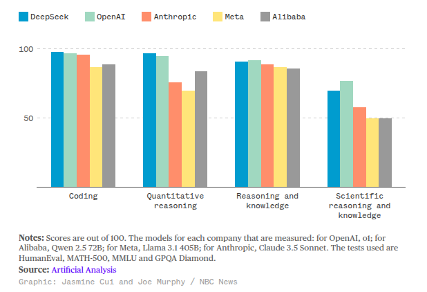
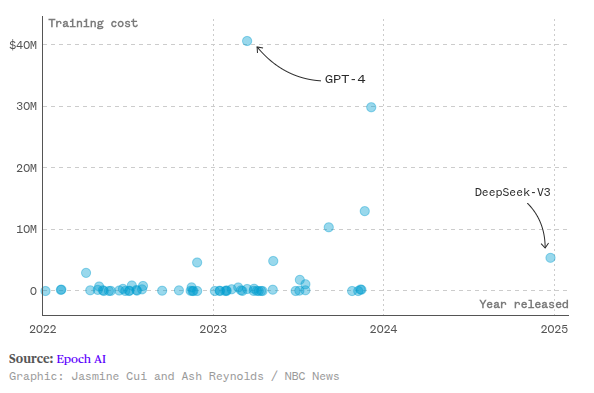
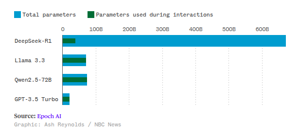

Playing the long game
🤖 In the age of LLMs 🤖
What does "the long game" look like?
- Signal to noise ratio = terrible
- Emerging best practices
- Emerging footguns
- Deluge of new tools and opinions - AI fatigue
- New roles and organization structures
- Economically concerning
- Environmentally concerning
1. AGI
- AI that is better than us at everything
- It can control all our stuff
- AI that is self improving
- Knowledge economy collapse
- Winner takes all
2. The bubble bursts
- Skills, infrastructure, tools remain
- Talent released
3. Frontier model capabilities stabilize
- Innovation continues
- Good engineering matters
How do we adapt?
- As individuals
- As teams
- As organizations
Hi, I'm Sheena
🧗♀️🏕️🧭🇿🇦🖊️🛠️🔥🐕🎸👩🏻💻 🧑🏫
- Software engineer + lead
- Educator
- Science of ed => Engineering of ed
- Non-profit - launching tech careers in 🇿🇦
- Prelude - Advanced Python + Teamwork
- Guild of Educators
Python community involvement
- Conference organizer
- DjangoCon Africa 1 - organizer
- PyConZA (South Africa)
- PyCon Africa 2025 Chair
- DSF member
- PSF Director
AI and education
- Preparing people for the future is my whole focus
- People in teams and organizations
- Lots of people ask me for career advice
😨
Part 1
Looking back to look forward
A brief history of LLMs
- 2018: GPT 1
- 2019: GPT 2 (post-training/fine tuning)
- 2020: GPT 3
- 2020: RAG
- 2021: Anthropic
- 2021: Codex + Github Copilot
- December 2022: ChatGPT
Scaling "laws"
- More data => More intelligence
- More parameters => More intelligence
- More money => More intelligence
New capabilities emerged with scale
- Capabilities that seem to appear suddenly at certain scales
- Mathematical reasoning at 100 Billion parameters
- In-context learning (the ability to learn from examples within a single conversation) appeared suddenly
- But some abilities showed "inverse scaling"—they actually got worse as models got larger
2022: Deepmind Chinchilla paper
- Chinchilla = 70-billion-parameter model on 1.4 trillion tokens
- GPT-3 = 175 billion parameters
- Gopher = 280 billion parameters
- Chinchilla out-performed these while MUCH smaller
- Estimates suggested the internet contained about 500 trillion tokens of unique text
Not all tokens are created equal
- Quality data is hard to find
- Low hanging fruit has been picked
2023
- OpenAI Plugin ecosystem + functions
- GPT-4 was amazing
- Microsoft research paper titled “Sparks of Artificial General Intelligence.”
- Venture-capital spending on A.I. jumped by eighty per cent in following year
- OpenAI's launches "Superalignment" project (Ilya Sutskever)
Post training
- Alignment - helpful, truthful, harmless
- Task/domain customization
- Where do post-training datasets come from?
2024: Plot twist 🍓
- Open AI releases o1. A reasoning model.
- != GTP4 + 💸💸💸
- != GPT5
- Iterative, chain-of-thought reasoning
- Come up with multiple answers, evaluate, return best one (scale up thinking time)
- December: o3 released
Late 2024: MCP
Open standard for connecting any AI assistant (LLM) to any external tool or data source in a plug-and-play way
"The 2010s were the age of scaling, now we're back in the age of wonder and discovery once again. Everyone is looking for the next thing"
- Ilya Sutskever
OpenAI co-founder | Safe Superintelligence Inc co founder
2025: Plot twist

Deepseek benchmarks

Training cost

Deepseek mixture of experts

Part 3
The Bubble Gold rush